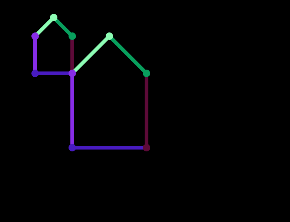

Datum: 16.03.2026
Bearbeiten Sie die folgenden Aufgaben und schreiben Sie Ihre Lösungen in die IDE-Fenster direkt unter der Aufgabe, so wie Sie es im Praktikum kennengelernt haben. Unter den IDE-Fenster finden Sie Buttons, mit der Sie Ihre Lösungen speichern können. Denken Sie bitte unbedingt daran, regelmäßig auch Zwischenstände Ihrer Lösungen zu speichern.
Viel Erfolg!
Mit Hilfe einer Java-Funktion sollen Windgeschwindigkeiten (in Knoten) als Gleitkommazahlen in ganzzahlige Windstärken (Beaufortskala) von 0 bis 12 umgerechnet werden. Dafür wird Ihnen bereits Programm-Code vorgegeben, den Sie bitte korrigieren bzw. erweitern, sodass dieser eine Konvertierung entsprechend der Tabellenwerte ermöglicht und dabei die genannten Anforderungen erfüllt.
| Knoten (kn) | Windstärke (Beaufort) | Bezeichnung |
|---|---|---|
| 0 – 1 | 0 | Windstille |
| 1 – 3 | 1 | Leichter Zug |
| 4 – 6 | 2 | Leichte Brise |
| 7 – 10 | 3 | Schwache Brise |
| 11 – 16 | 4 | Mäßige Brise |
| 17 – 21 | 5 | Frische Brise |
| 22 – 27 | 6 | Starker Wind |
| 28 – 33 | 7 | Steifer Wind |
| 34 – 40 | 8 | Stürmischer Wind |
| 41 – 47 | 9 | Sturm |
| 48 – 55 | 10 | Schwerer Sturm |
| 56 – 63 | 11 | Orkanartiger Sturm |
| ≥ 64 | 12 | Orkan |
Anforderungen:
-1 zurückgegeben werden.Beispielaufrufe:
knotenZuBeaufort(6.0) -> 2knotenZuBeaufort(12.5) -> 4knotenZuBeaufort(27.99) -> 6knotenZuBeaufort(-1.0) -> -1
Erstellen Sie eine Funktion clamp(values, min_value, max_value), die als Parameter ein int-Array
(values), ein Minimum (min_value) und ein Maximum (max_value) bekommt. Die Funktion soll die Werte im Array values so anpassen, dass sie alle zwischen einem minimalen und
einem maximalen Wert liegen. Dabei gilt, dass Werte kleiner als der minimale Wert (min_value) auf den minimalen Wert und Werte größer
als der maximale Wert (max_value) auf den maximalen Wert gesetzt werden sollen. Die Parameter min_value und max_value
sind beide vom Typ int.
Als Ergebnis dieser Funktion liegen alle Werte des übergebenen Arrays im Bereich [min_value; max_value].
Beispielaufruf:
int[] x = {124, 289, -10, 4000, 50};clamp(x, 0, 255) -> Rückgabe: {124, 255, 0, 255, 50}In dieser Aufgabe soll ein Programm implementiert werden, mit dem die äußeren Konturen einer 2D-Figur stückweise nachgezeichnet werden. Dabei sollen übergebebene Punkte sowie die dazwischenliegenden Strecken gezeichnet werden. Bearbeiten Sie dazu bitte die folgenden Teilaufgaben.
Teilaufgaben:
In der Datei Main.java sehen Sie einen Beispielaufruf für das gesamte Programm, das dieselbe
Ausgabe erzeugt, wie in der folgenden Abbildung dargestellt, sofern alles korrekt implementiert ist.
Prüfen Sie möglichst erst, welche Klassen bzw. Funktionalitäten schon gegeben sind.
Hinweis: Beachten Sie, das die Farben zufällig gewählt werden und daher nicht zwingend übereinstimmen müssen.
